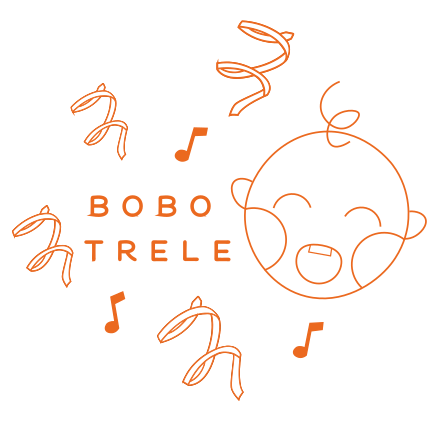

Bobotrele
zrodziły się z chęci towarzyszenia i wspierania Waszych dzieci w procesie odkrywania świata muzyki.
Każde zajęcia są starannie zaplanowane, a działania, zabawy i pomoce dydaktyczne mają swój określony cel.
Za najwyższą wartość stawiam podążanie za dzieckiem, tak żeby wykorzystywać jego potencjał, wzmacniać nabyte umiejętności i wspierać jego integralny rozwój.